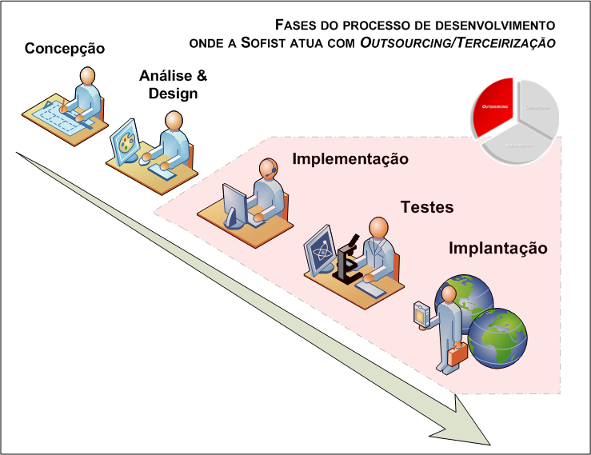
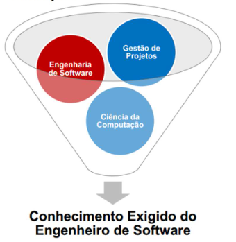

Introdução
Hello world!
Bem vindo ao aprendizado de desenvolvimento de software de qualidade.
Bem vindo a Ciências da Computação e a Engenharia de Software!
O objetivo do software é produzir continuamente algo que satisfaça as necessidades de seus usuários, minimizando o esforço necessário para fazê-lo.
Desenvolver software é um processo complexo. O sucesso depende de pessoas, de processos, métodos e ferramentas.

A rotina básica de desenvolvimento de software é simples:
- Codificar
- Validar
- Salvar
Testar
Iniciar do zero ou baixar o código de um servidor (repositório), codificar, conferir se tudo está correto como planejado (validar o que foi criado) e, se tudo estiver como esperado, integrar as novas partes do softwares (artefatos) ao servidores e testar as novas funcionalidades.
O grande desafio aqui é lidar com o aumento da diversidade, com as constantes mudanças (solicitações dos clientes e tecnologias novas), demanda pela diminuição do tempo de entrega e o desenvolvimento de software confiável, seguro e principlamente de qualidade.
Um software de qualidade é fácil de usar, funciona corretamente, é de fácil manutenção e mantém a integridade dos dados para evitar possíveis falhas, fora ou não, do seu controle.
Mas como desenvolver software com qualidade?
“No desenvolvimento de software, a qualidade do produto está diretamente relacionada à qualidade do processo de desenvolvimento.”
Para desenvolver software de qualidade é necessário seguir um conjunto de métodos e técnicas já consagrados que devem ser implementadas durante todo o processo do desenvolvimento do software.
Dái nasceu a necessidade dos desenvolvedores de softwares se capacitarem, criando a Engenharia de Software que uni teórias e métodos das disciplinas de Ciências da Computação, da Engenharia da Computação, Administração, Matemática, Gerenciamentode Projetos, Gestão da qualidade e Engenharia de Sistemas para produzir um processo de software de qualidade.(swebok-v3)

A meta essencial e básica da Engenharia de Software é produzir software de qualidade.
A Engenharia de Software capacita as pessoas com a utilização de teorias, técnicas e ferramentas da Ciência da Computação para produção e desenvolvimento de software com alta qualidade e baixo custo.
Em qualidade básica Freeman ¹[Freeman 87] lista: funcionalidade, confiabilidade, facilidade de uso, economia e segurança de uso. Em qualidade extra ele lista: flexibilidade, facilidade de reparo, adaptabilidade, facilidade de entendimento, boa documentação e facilidade de adicionar melhorias.
O Objetivo principal da engenharia de software é fornecer uma estrutura para a construção de software de qualidade que sigam as especificações de orçamento e prazo, que possa evoluir com o tempo e que irá satisfazer os patrocinadores da criação e as pessoas que o utilizarão.
Esse guia tem um único objetivo:
Capacitar você para desenvolver software com qualidade.
Dictionary
Software Engineering: Engenharia de Software. Pronúncia: soof-tu-er en-juh-nee-ruhng
Hello world: Olá Mundo Pronúncia: heh-low wurld
Bibliografia
Freeman, P. A., (1987) “Software Perspectives: The System is the Message”, Addison-Wesley, Reading, Massachusetts.
SWEBOK. Guide to the Software Engineering Body of Knowledge. 2004 Version.